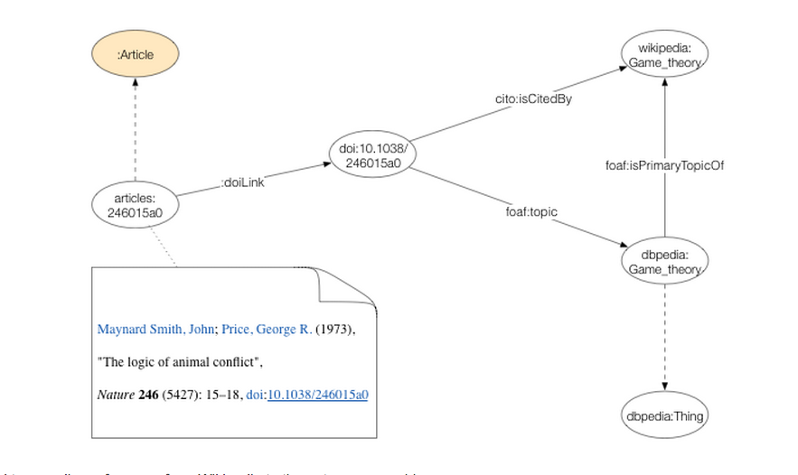

Is wikipedia a valid source of scientific knowledge?
Is Wikipedia a valid source of scientific knowledge? Many would say yes. Others are still quite skeptical, or perhaps just cautious about it. What seems to be the case, though - and this is what this post is about - is that Wikipedians are increasingly including references to scientific literature, and when they do so, they do it correctly.
Based on data we've recently extracted from Wikipedia, it appears that the vast majority of citations to nature.com content have been done according to established scientific practice (i.e., using DOIs). This suggests that whoever added those citations is either a scientist or has some familiarity with scientific citation practices.
In the context of the nature.com ontologies portal, we've done some work aimed at surfacing links between our articles and other datasets. Wikipedia and DBpedia (an RDF database version of Wikipedia) quickly came to our attention: How much do Wikipedia articles cite scientific content published on nature.com? Also, how well do they cite it?
So here's an interactive visualization that lets you see all incoming references from Wikipedia to the nature.com archive. The actual dataset is encoded in RDF and can be downloaded here (look for the npg-articles-dbpedia-linkset.2015-08-24.nq.tar.gz file).
About the data
In a nutshell, we extracted all mentions of either NPG DOIs or nature.com links using the Wikipedia APIs (for example, see all references to the DOI "10.1038/ng1285").
These links were then validated against the nature.com articles database and encoded in RDF in two ways: a cito:isCitedBy relationship links the article URI to the citing Wikipedia page, and a foaf:topic relationship links the same article URI to the corresponding DBpedia page.

{kind=link}
Quite interestingly, the vast majority of these links are explicit DOI references (only approximately 900 were links to nature.com without a DOI). So it seems that people do recognize the importance of DOIs even within a loosely controlled context like Wikipedia.
Using the dataset
Considering that for many, Wikipedia has become the de facto largest and most cited encyclopedia out there (see the articles below), this may be an interesting dataset to analyze, e.g., to highlight citation patterns of influential articles. Also, this could become quite useful as a data source for content enrichment: the Wikipedia links could be used to drive subject tagging, or they could even be presented to readers on article pages as contextual information.
{kind=link}
We haven't really had time to explore any follow up on this work, but hopefully we'll do that soon.
All of this data is open source and freely available on nature.com/ontologies. So if you're reading this and have more ideas about potential uses or just want to collaborate, please do get in touch!
Caveats
This dataset is obviously just a snapshot of Wikipedia links at a specific moment in time.
If one were to use these data within a real-world application, they'd probably want to come up with some strategy to keep it up to date (e.g., monitoring the Wikipedia IRC recent changes channel). The good news is, work is already happening in this space:
- CrossRef is looking at collecting citation events from Wikipedia in real time and releasing these data freely as part of their service, e.g., see this CrossRef blog
- Altmetric scans Wikipedia for references too, e.g., see a sample article page on Altmetric and this blog post, however the source data is not freely available.
Readings
Finally, here are a couple of interesting background readings I've found in the nature.com archive:
- Wikipedia rival calls in the experts (2006) http://www.nature.com/nature/journal/v443/n7111/full/443493a.html
- Publish in Wikipedia or perish (2008) http://www.nature.com/news/2008/081216/full/news.2008.1312.html
- Time to underpin Wikipedia wisdom (2010) http://www.nature.com/nature/journal/v468/n7325/full/468765c.html
Enjoy!